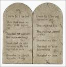

In the Beginning...
The name of the first book of the Bible, Genesis, means beginning. The first two chapters of Genesis tell us that God created the universe: the stars, the earth and all the other planets, and every living being that is or ever was. God's most special creation was human beings: people. People are special because they are created in God's own image. (See Genesis 1:26-27)

Adam and Eve
The third chapter of Genesis tells the story of how sin entered into the world. Adam and Eve, the first man and the first woman, were tempted to believe that God lied to them. Believing that lie, they were then convinced that they could actually BE like God. When God saw they had been disobedient, Adam and Eve no longer enjoyed the same open relationship with Him that they'd had before; sin had separated them from God. And so it has been for every person, save One, who has ever lived since then: we are all separated from God by sin.

Chapters four and five of Genesis continue the sad story of the increasing wickedness of mankind. God had not yet given us His commands for right living, and people behaved just as they pleased. All of civilization seemed bent on violence and immorality of all types. Seeing the sorry state of his highest creation caused God to regret that he had made beings capable of such behavior.

Noah
As God looked down on His sinful creation, He found one man who walked with the Lord: Noah. God had decided to wipe out mankind and start afresh with Noah and his family. Chapters six through eight of Genesis tell of how God destroyed all of mankind with a flood, saving only Noah and his wife and their three sons and their wives.
Chapters nine through eleven of Genesis give us the story of how the earth was repopulated after the flood by Noah's sons, Shem, Ham and Japheth. At the end of chapter eleven, we are introduced to a very special man, a man God would call to be the father of a people He could call His very own.
Abraham

In Genesis, the Bible tells us of a number of people who "walked with God," like Noah. Walking with God requires faith: an unquestioning belief that God will do what He promises to do. It took great faith for Noah to believe that God would destroy the earth's entire population with a flood and to follow God's instruction to build an ark (a large boat), when people all around him ridiculed him as he worked. In Genesis twelve, we learn of another man of whom God would require great faith: Abraham.
God asked a great deal of Abram (God later changed his name to Abraham): He asked Abraham to leave his homeland and move to a place he'd never seen, where he knew no one. For his obedience, God made two promises to Abraham:
- that He would give the land of Canaan (what we now call Israel) to Abraham and his descendants
- that a great nation would come out of Abraham's descendants
In Abraham's mind, both of these promises must have had problems with them. The land of Canaan already belonged to several other sets of people, and Abraham and his wife had no children. And Abraham's wife, Sarah, was far too old to have children. Even so, Abraham had faith, and so he and all of his household set out for Canaan.
If you read the story of Abraham in chapters 12-23 of Genesis, you'll see that Abraham's faith was not perfect: he sometimes "took matters into his own hands," rather than waiting on God and His timing. Still, we read in Genesis 15:6, "Abram believed the Lord, and He credited it to him as righteousness."
Even when it isn't easy, even when WE can't see the way, God asks us to have faith in Him.

Just as God had promised, Sarah DID have a son; she and Abraham named him Isaac. Sarah rejoiced at having a child, even in her old age.
When Isaac grew up and married, he had two sons, Jacob and Esau. (Genesis 25:19-Genesis 30)
Jacob had twelve sons (you can see a list of their names in Genesis 35:23-26). The names of these sons would become the names of the twelve tribes of Israel. (God actually changed Jacob's name to Israel - Genesis 35:10.) Through these twelve sons, God fulfilled His promise to Abraham of making a great nation of people from him.

Moses
One of Jacob's sons, Joseph, went to Egypt and became a great officer in the court of the Pharaoh (you can read about it in Genesis 37-50; it's a long story, but quite an adventure). Eventually, all eleven of Joseph's brothers moved to Egypt, as well. As long as Joseph was alive, his family lived well because of his connection to the Pharaoh.

After Joseph's death, other generations were born, and a new Pharaoh came into power who did not know that Joseph had been favored by the royal family. This new Pharaoh saw that the Jews (the Israelites were also known as the Jews or the Jewish people) had greatly increased in number. It made him afraid that they might overpower his government, so he made all of the Israelites (Jews) slaves in Egypt.
In Exodus 2:23, the Bible tells us that the Israelites suffered greatly as Egypt's slaves. They cried out to God to rescue them, and God heard them. He chose a man from among the Jews to help deliver Israel from slavery. That man's name was Moses.

Unlike Abraham, who heeded God's call, Moses tried at first to get the Lord to use someone else. (Exodus 4:1-14) God showed Moses that it would be God, not Moses, who would actually force the hand of Pharaoh to free the Jewish slaves. Moses would merely be God's messenger.
In Egypt, they worshiped many gods--idols--not the God of Abraham, Isaac and Jacob. When Moses first approached him (Exodus 5), Pharaoh scoffed: "Who is the Lord, that I should obey Him?"
Moses returned to Pharaoh with a second request that Pharaoh release the Jewish slaves. This time, however, Moses carried with him a warning from God: if Pharaoh did not agree to free the Israelites, God would unleash a series of nine plagues on Egypt: plagues of destruction, disease and darkness. Amazingly, even after the horrible effects of these plagues, Pharaoh still refused to believe in God's power and would not free the Jews. (Exodus 7:15-Exodus 11)
It was only after the tenth plague (Exodus 12) that Pharaoh finally agreed to free Egypt's slaves. The firstborn son of every Egyptian household would be killed. However, God would save the firstborn sons of the Jews. He instructed them to sacrifice a lamb and paint its blood over the doors of their homes. When the angel of death came to kill the firstborn sons, He would "pass over" the homes of all the Israelites who had followed His instructions for painting the lamb's blood over their doors.
To this day, Jews celebrate the festival of Passover each year to commemorate the miracle that helped to free them from slavery.

Under the leadership of Moses, the Jews began their journey out of Egypt. Even after everything that had happened to Egypt at the hand of God, Pharaoh tried one last time to keep the Jews in bondage.
The Egyptian army chased the Israelites to the Red Sea, thinking they had them trapped at the water (Exodus 14). The Israelites began to panic, but Moses urged them to have faith in their God. God commanded Moses to raise his walking stick by the water. Miraculously, the waters of the Red Sea parted, creating a path of dry land that allowed them to cross to the other side. When Pharaoh's army tried to cross by the same path, the waters of the sea fell down from both sides, drowning them all. At last, the people of Israel were out of Egypt and free from slavery.
And, just as God had told Moses when He first called him, it was the mighty hand of God that accomplished it all!

The Ten Commandments
As we saw in the story of the Great Flood, God had not yet given His laws to men. When the Jews began making their way to the land that God had promised to Abraham and his descendants, God instructed Moses to climb to the top of Mount Sinai. There, with the mountain covered with smoke to shield the people from God's overwhelming glory, Moses received God's commandments for His people (Exodus 20:1-17).

Just because the Jews were no longer in bondage to Egypt, it didn't mean that all their troubles were over. The story of their journey to the land God had promised them covers a period of forty years!
The faith of the Israelites was weak; they often doubted that God would provide for them. They got so discouraged at times, they actually talked about returning to Egypt! And, perhaps worst of all, they even created idols to worship because they doubted God so much.
The story of the death of Moses is recorded in the 34th chapter of Deuteronomy. It is in the book of Deuteronomy that God expands on the laws He had given His people at Mount Sinai. He outlines how people were to conduct themselves among their fellow Jews and how they were to worship God.